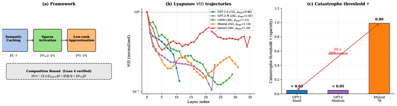

Twelve Lean 4 norm inequalities provide machine-checked per-matrix error bounds for transformer compression.
Abstract
Compressing transformer weights makes large language models cheaper to deploy. But each layer's compression introduces an error. These errors accumulate as the signal passes through later layers, and how they accumulate is not well understood. We measure this directly: at each layer, we take the ratio of output to input error, calling it rho. A value below one means the layer absorbs the error; above one means it grows. Computing rho on six transformers (117M to 8B parameters) yields three findings. (i) Errors at layer t scale downstream by the product of later rho values, predicting representation drift (Spearman r = -0.44, p < 10^-4). This explains why compressing early layers hurts more than late ones, and why depth-decreasing sparsity schedules outperform uniform ones. Across architecture families, however, model width and redundancy matter more than rho alone. (ii) Within a layer, naive pruning shows a 600x spread in component sensitivity. Activation-aware pruning (Wanda) shrinks this to 3-7x; the ranking reverses across architectures, so fixed importance scores do not transfer. (iii) For depth pruning, ranking layers by how far rho is from one takes two forward passes. It beats ShortGPT's Block Influence with 1.6x lower perplexity at eight layers removed, and physical deletion delivers 1.22x wall-clock speed-up. A blend of the two criteria does best (perplexity 14.2, 60.0% downstream accuracy on LLaMA-2-7B). Twelve Lean 4 norm inequalities provide machine-checked per-matrix error bounds. The contraction profile thus gives a training-free instrument for two decisions: where to compress within layers, and which to remove.
Problem
Compressing transformer weights introduces per-layer errors that accumulate through subsequent layers, but how these errors propagate and which layers are most sensitive to compression is not well understood.
Approach
The authors define rho, the ratio of output to input error at each layer, and compute it across six transformers (117M to 8B parameters). They analyze error propagation, component sensitivity within layers under naive and activation-aware pruning (Wanda), and propose a depth-pruning criterion based on rho deviation from one. Twelve Lean 4 norm inequalities provide machine-checked per-matrix error bounds for the theoretical framework.

Figure 1 : Overview. (a) Three composable approximation stages with per-matrix bounds. (b) Relative error energy V(t) trajectories across six architectures: GPT-2 Small contracts monotonically ( \rho_{\max}=0.96 ), while GPT-2 Medium’s final layer amplifies ( \rho_{23}=2.05 ). LFM2-2.6B (hybrid) and Mistral-7B show moderate amplification; Qwen3-8B oscillates most. (c) Catastrophe threshold \tau in
Results
Errors at layer t scale downstream by the product of later rho values (Spearman r = -0.44, p < 10^-4). The rho-based layer removal criterion beats ShortGPT Block Influence by 1.6x lower perplexity at 8 layers removed, with 1.22x wall-clock speedup. A blended criterion achieves perplexity 14.2 and 60.0% downstream accuracy on LLaMA-2-7B.